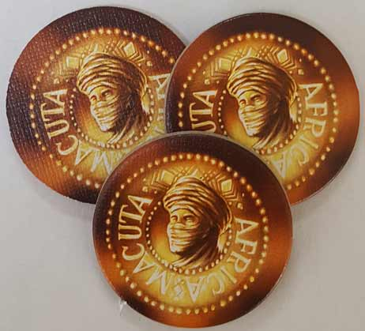

In this Targi review, D and Will break down the 2-player, worker placement, set collection game from designer Andreas Steiger. Published by KOSMOS, this game has its players becoming Targi’s (Tuareg men) as they attempt to trade goods (salt, pepper, dates) and grow their tribe. The gameplay requires that players place their meeples around the board in order to collect said goods as well as carry out a number of clever actions. The player with the best strategy will collect the most tribe cards and victory points, winning the game. For our thoughts on Targi, continue reading below.
D reviews Targi
 (Author’s
note: this review is meant to accompany our gameplay video and will not
go in-depth on the game’s rules. If you’re interested in learning how
the game is played, please watch the video. It’s not bad.)
(Author’s
note: this review is meant to accompany our gameplay video and will not
go in-depth on the game’s rules. If you’re interested in learning how
the game is played, please watch the video. It’s not bad.)
Man, what a clever idea. I suppose I’m at least a little jealous of anyone who has had a board game get published, but I don’t often come away from a game specifically thinking to myself, “I wish I had thought of that.” But that’s exactly what happened with Andreas Steiger’s Targi. It may not be groundbreaking, but the way you place your pieces down on Targi’s board of cards is immensely satisfying to me, personally, in a way that I’m not sure I can adequately articulate, but I’m going to try.
I think in some ways it taps into some weird, primal part of my brain that I don’t really understand. The part that enjoyed connect-the-dots puzzles when I was a child. There’s something innately pleasing about connecting two points via a line – even if it isn’t a tangible one – in order to arrive at a solution. But the game goes further with this by incorporating opposition and strategy into the proceedings. Your choices at the beginning of a round are ample, but with each additional figure placed down, fewer and fewer options are available to you. This means the odds of your preferred strategy getting ruined by your opponent increase substantially. It’s uncommon to get exactly what you hoped for at the start of a round, so on those rare occasions where you do get exactly what you wanted, the feeling is particularly sweet. Plus, when that happens it kind of feels like you put one over on your opponent without them realizing it. And I’m not too proud to admit that I like winning and feeling clever.
Targi’s impressive design is not merely limited to the way the figures get placed on the board, either. I think that I tend to rail hard against randomness, but I recognize that it has a place in gaming and is often necessary for a good experience. I think Targi, in particular, does an excellent job of balancing randomness with certainty. The border cards never change, so at the very least you know that round-in and round-out that you’ll have those cards available to you (except for the one with the robber). The randomness occurs between them, with the goods and tribe cards constantly being traded in and out. No two games of Targi will be exactly the same, but it also does a good job of not providing too many variables so as to make things volatile and unpredictable. There are only a handful of different resources that may appear on the goods cards, and the tribe cards have enough variety to allow for different strategies, but not so much variety that those strategies are very risky. Yes, luck is a factor in this game, but you can do a lot towards making your own luck as well, and I would say that’s a mark of good game design.
Targi is, as you may have noticed, one of several two-player games that we’ve played recently, and I’d say that this is perhaps the finest of the bunch. If I have one caution that I would extend to my readers, it’s that the game is maybe slightly slow for a two-player game. A session will probably run you about an hour, which isn’t terrible, but it’s all worker placement and resource management, without any necessary interaction between the players. This should be fine for a couple of enthusiasts, but for people who don’t enjoy serious or strategic board games, this is unlikely to make for a rewarding experience. For the right audience, however, Targi is a real gem and a game that I will not hesitate to recommend. I look forward to playing it again.
D’s Rating: Four and One-Half Stars out of Five.
Will reviews Targi
 Of all of the (strictly) 2-player games we’ve played on Board Crazy, Targi is the best, without a doubt. I know that’s a strong way to begin, but it’s true, and I should add that Targi is one of the best games we’ve played, period. Unlike Lost Cities, another 2-player title in KOSMOS’ line of such games, Targi makes
good use of its theme. And the gameplay, while it takes a bit of time
to complete, is expertly designed and addictive. This game makes a
strong impression in a multitude of ways, and the replay-value is high.
Of all of the (strictly) 2-player games we’ve played on Board Crazy, Targi is the best, without a doubt. I know that’s a strong way to begin, but it’s true, and I should add that Targi is one of the best games we’ve played, period. Unlike Lost Cities, another 2-player title in KOSMOS’ line of such games, Targi makes
good use of its theme. And the gameplay, while it takes a bit of time
to complete, is expertly designed and addictive. This game makes a
strong impression in a multitude of ways, and the replay-value is high.
As one would expect from a KOSMOS game, the component quality here is satisfactory. Instead of breaking down how well each component is made, I’d rather point out how well they’re utilized within the gameplay. Take the border cards for instance – in many games, they’d merely be used to add color and define the game’s edges. Sure, these cards do frame the play area, but they’re also part of the play area, with each one featuring abilities that you can exploit. Also, Targi isn’t one of those games where you’ll constantly have to reference the rulebook for clarifications, as each ability is clearly explained in text on every card. At this point, such a feature is a no-brainer, and yet you’d be surprised how many games still omit text descriptions.
The tribe cards also display these text explanations and are employed within the gameplay to the fullest. Since the main goal of this game is to grow your tribe in the most productive way, these cards are the crux of the gameplay. The first thing that struck me about them is how well they’re arranged, with each element of the card being intelligible and intuitive. The graphics portray the card type, the cost is in the top right, the victory points are in the bottom right, and the special ability (if there is one) is centrally located in text. The graphics stuck out to me because they’re not only striking, but also used so well given the theme. There are five different kinds of cards (oases, wells, camps, camel riders, and Targia women), and combinations of these cards have their benefits. Diversify and have rows of differing kinds and you’ll earn bonus points, which thematically makes sense. At the same time, you could also attempt to construct rows of identical card types and earn even more bonus points. This makes less thematic sense, but I could still see how being rich in say, camel riders, could benefit a nomadic tribe in Northern Africa.
Having determined that the components are well organized and utilized, it’s time to analyze the superb gameplay itself. Andreas Steiger (the designer) did an incredible job balancing luck and strategy here. By that, I mean that no matter how unlucky the draw of tribe and goods cards is, you still always have a high level of control over your fate. Placing your meeples (Targi’s) on the border cards is how you’ll maintain your control over the proceedings. This intersecting system, where you place your meeples around the edge and then activate the cards at the intersection, is quite brilliant. And since your opponent cannot place their meeple on the opposite border card, this mechanic allows you to sabotage them while also helping yourself. All of this means that, not matter how poorly you’re doing, you always feel like there’s a way for you to win. Targi never feels like it’s screwing you, and given that it’s a card game, that’s remarkable.
While the tribe and goods cards are always changing, the border cards never do. I found this fact to be comforting, since I always had some idea of what I was going to do, no matter how bad the card draw was. It was especially smart that Steiger also included all of the goods on separate border cards, thus eliminating the chance that one resource would disappear for a few rounds. Not only are the border cards beneficial because they cultivate strategy, they also keep the gameplay moving. Often in games where the board is constantly in flux, there’s a persistent downtime in which players have to re-evaluate what’s in front of them. That’s not a problem in Targi because the game offers so much power and stability to its players.
Finding anything negative to say about this game is quite difficult for me, and anything I do say will almost certainly be a nitpick, so keep that in mind. I will point out that a few of the cards were inconsistently powerful, which is inevitable in this kind of game. For example, the “Fata Morgana” border card is basically always used in every round because what it does is so exceptionally valuable. Being able to move one of your markers to any tribe or goods card is so advantageous that it almost undermines the intersection mechanic… almost. Also, Targi isn’t the shortest 2-player game by any stretch. An average session of it will run 60-90 minutes in my experience, which is pretty long for this player count. Objectively, length of play doesn’t affect my opinion of the game, but it is something to consider.
On the whole, Targi is an absolutely exquisite example of 2-player board game design. Nearly every single decision made by its designer pushed the game towards perfection, and it would’ve gotten there if it weren’t for a few slightly questionable choices. Then again, I don’t know if I would even be able to perceive the perfect game, since I’m fairly confident that I’ve never played one. But I have played some that are close, and I think I’m going to add Targi to that list. It’s that good, so if you have someone to play it with, then definitely try it out.
I give Targi an: A
Targi – Board Crazy’s Ratings
Leave a Reply
You must be logged in to post a comment.